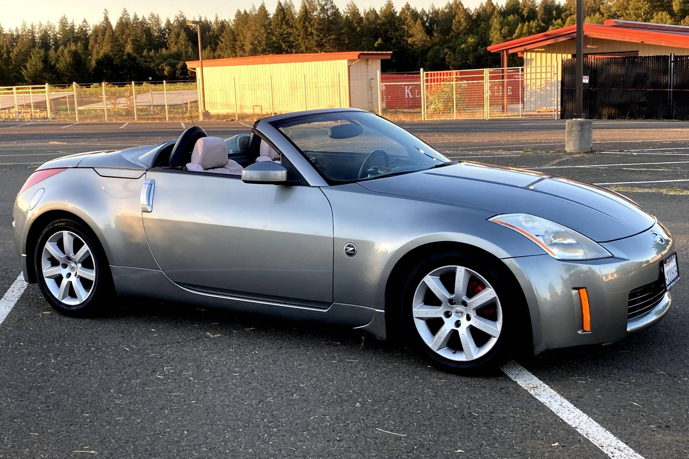

An Introduction to Nissan's Sports Icon
The Nissan 350z is a widely celebrated sports car that was actively produced by Nissan from 2002 to 2009. It marks a significant milestone as part of the historical Nissan Z-car line, which has captured drivers' hearts for decades. The car is internationally known for its impressive factory performance, responsive handling, and incredibly sleek modern design language. Beneath the hood, the 350z features a powerful V6 engine paired with rear-wheel drive and a lightweight sports chassis. This specific combination makes it a highly popular and affordable choice among car enthusiasts and modern collectors alike. Today, finding a clean model remains a major goal for many automotive hobbyists looking to experience an authentic driving experience.
The history and culture behind the car
The launch of the Nissan 350Z in 2002 marked a pivotal moment in modern automotive history by effectively resurrecting Nissan’s legendary Z-car lineage after a six-year hiatus in the North American market. Developed under the leadership of Carlos Ghosn, the fifth-generation Z-car, codenamed the Z33, was engineered to deliver authentic sports car performance at an accessible price point. By blending a robust front-midship chassis with a potent V6 engine, the 350Z did not just save Nissan’s performance reputation, but it also democratized the sports car experience for an entirely new generation of drivers. Today, the vehicle stands as a definitive cultural icon of the 2000s, heavily celebrated for its massive impact on professional motorsports, global car tuning culture, and competitive drifting circuits. It frequently appears in popular movies and racing video games, which helps keep its legacy alive for younger generations. Even years after production ended, car clubs around the world still gather to celebrate this legendary vehicle's unique design.

Coupes and Roadsters
The Nissan 350Z was offered in two primary body styles: the coupe and the roadster. The coupe featured a fixed roof and a more rigid chassis, which contributed to its superior handling characteristics. It was designed for enthusiasts who prioritized performance and driving dynamics. The roadster, on the other hand, offered an open-top experience, appealing to those who valued the thrill of wind-in-the-hair driving. Both models shared the same engine options and performance capabilities, but the choice between them often came down to personal preference regarding style and driving experience.

Available trim levels:
- Base
- Enthusiast
- Touring
- Track